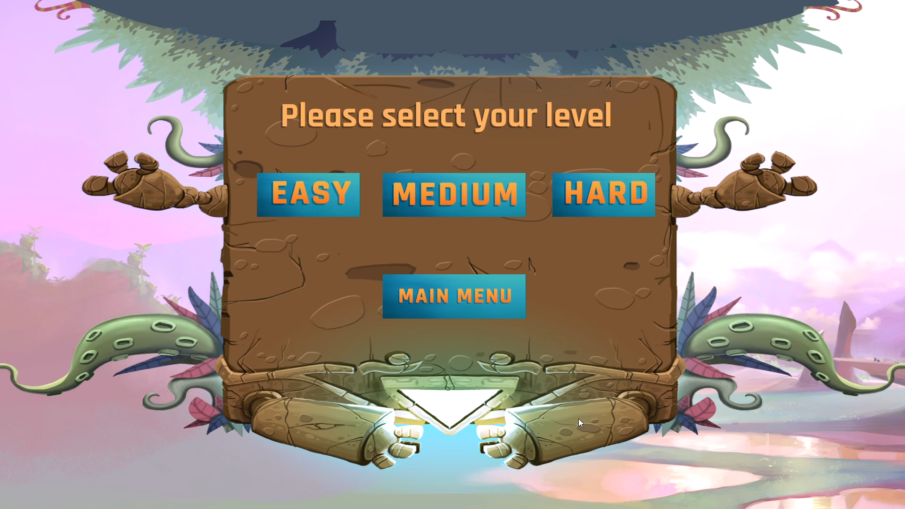
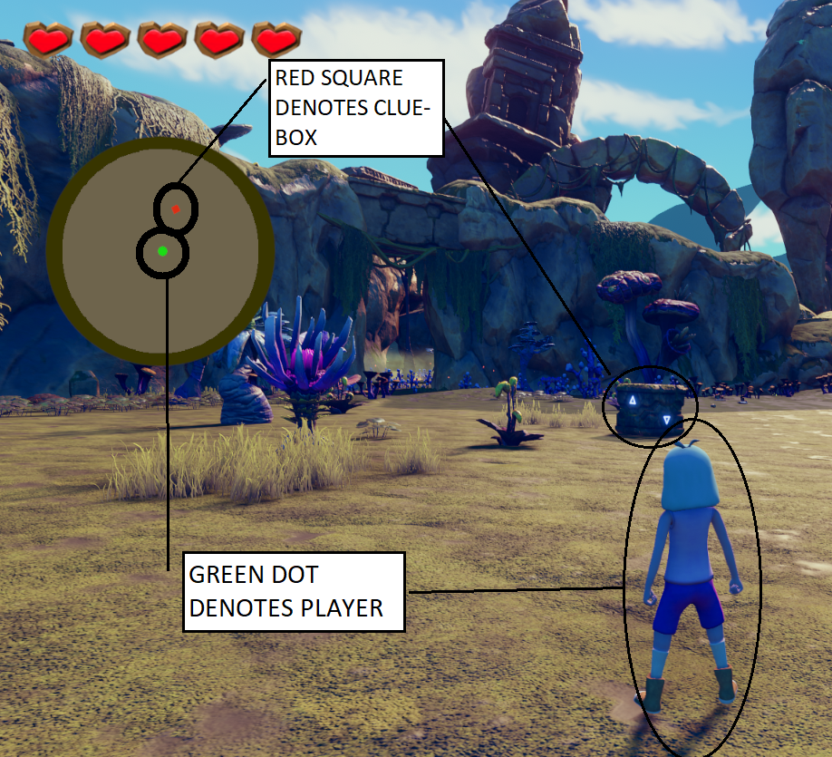
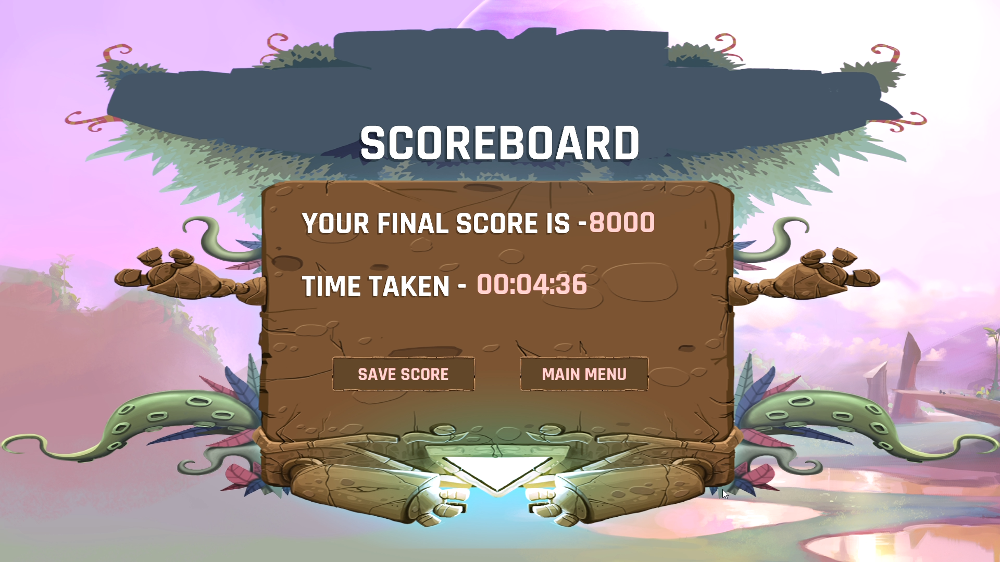
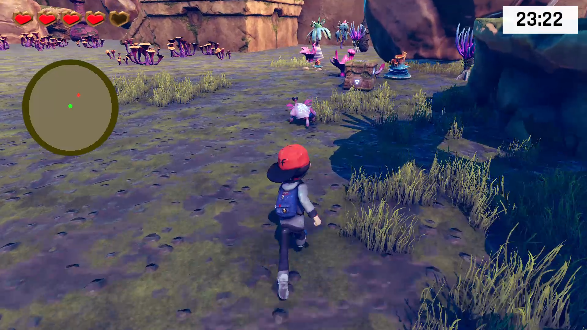
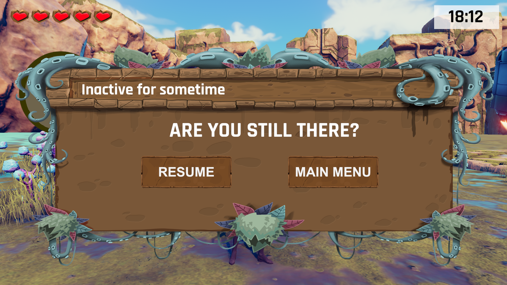
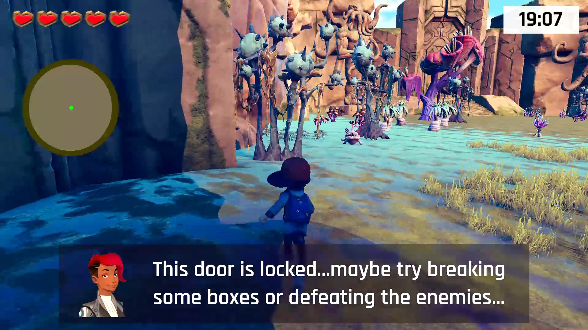
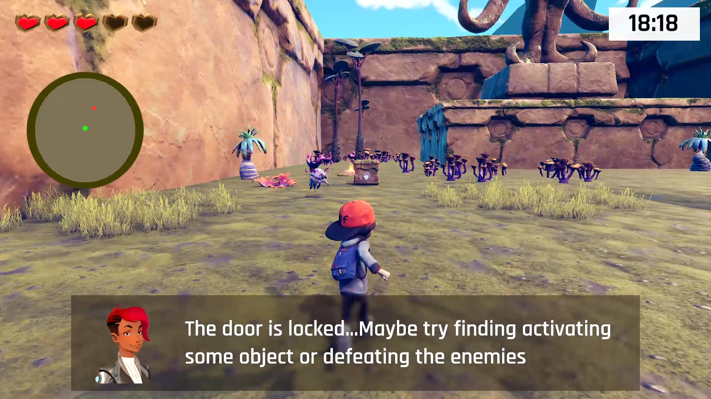
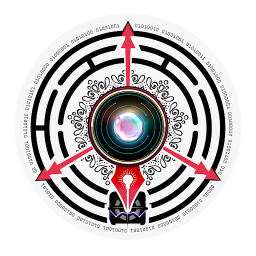

G4D++: A Treasure Hunt Game for Novice Programmers to Learn Debugging
Tool Description
G4D++ aims to teach debugging to novice programmers through a treasure hunt based game. The steps involved in the process of debugging are scaffolded by the steps involved in finding clues and finally arranging all the clues found.
Installation
From Github
Clone or download this github repository:
git clone https://github.com/harmitsb2122/G4D-plus.git
Open the project G4D from UnityHub.
Approach diagram
The approach followed in designing G4D++ is depicted below
Features
-
Multiple levels and Multiple difficulties: The game consists of 3 levels and also difficulty can be set to Easy, Medium or Hard.

-
Random Code Snippets: Each level has 3 different code snippets to debug out of which one will be chosen randomly and displayed in the game. The clue-boxes also have randomized clues.
-
Mini-Map: For easy navigation through the playing area, the game consists of a mini-map. The clue-boxes show up as red dots in the map when the player is in vicinity of the box.

-
Scoreboard: The game generates a score based on correct and wrong answers submitted by the player, this score can also be saved to a leaderboard by signing in from their account.

-
Timer-Countdown: Each level need to be comepleted in a stipulated time. The remaining time is displayed in the top right corner of the screen.

-
Prompt for Inactivity and Info-Zones: The game features a prompt for inactivity which pops up when there is no input from the player for a specified amount of time and the game is paused.From that prompt the player has the option to resume the game, go to the main menu or quit the game.
Info-Zones help the player to search in the correct direction by giving a prompt if the player is searching for the clue boxes at the wrong place
  
-
Multiple Characters: This version of the game provides the player a range of avatars to choose from which breaks the monotony of having to play with the same character all the time.

Uses
- Novice programmers often find debugging as a difficult and time consuming task.Our game focuses on a way to teach debugging in a fun way and to develop their interest in the debugging process.
- In the proposed game, we try to support novice programmers by encouraging them to isolate the chain and then correct the defect in the isolated chain.In this process they can learn the process of debugging in a more systematic way.
- Since the game has a feature of saving the score on the leaderboard, players can compare their score with others.This might motivate them to debug the code snippets more accurately and quickly.In this process their overall ability of debugging would be enhanced.
Instructions for G4D++
- Players go around the planet to find clues that are hidden inside box-like structures.
- Only some of these boxes contain clues.
- The boxes can be broken by sword (weapon).
- Alien Enemies also appear around the planet that can be killed by attacking with the sword (weapon) with one to three hits.
- Some facilities such as moving ground can be activated by collecting stones, which are primarily in fire emitting a red shade and get cooled on collection emitting a blue shade.
- Once all the clues are collected, the player can navigate to the spaceship, when the code snippet is displayed to the player, with clues collected displayed adjacent to it.
- The player can fill in the required clues in the form of text or drag and drop depending on the difficulty of the level at appropriate places to finish the level.
- If the code snippet is debugged correctly ,then the key (red crystal) could be activated which would open the door to the next level.
- The process will go on until the player quits or the game ends.After the game ends the person would be directed to a menu where he/she can view the score and total time taken.
- Scoring system is done based on the number of incorrect clues provided.
Results
- According to MEEGA+, values of 3.5+ usually indicate positive response from the participants.
- Also, the quality score calculated based on the mean values of the variables and the cronbach alpha values defined by MEEGA+ result in the quality score of 64%.
- According to MEEGA+, games with quality score value less than 42.5 are considered to be of low quality, between 42.5 to 65 are considered to be of good quality and those with value greater than 65 are considered to be of excellent quality. Thus, we observe that, based on the survey results, G4D++ has a good quality level.
Demo Video
Facing issues in viewing the video? Visit the following link:
Contributors
Harmit Singh, Sarthak Girotra , Akhila Sri Manasa Venigalla,Dr.Sridhar Chimalakonda
Research in Intelligent Software & Human Analytics (RISHA) Lab, IIT Tirupati,
In collaboration with CEMCA
Acknowledgements
We thank CEMCA for their financial support and encouragement throughout the development and deployment of G4D++. We further thank the Department of CSE, RGUKT, for the deployment of G4D++. We also thank the participants at RGUKT and at IIT Tirupati for helping us in the evaluation of G4D++ through their valuable time and feedback.